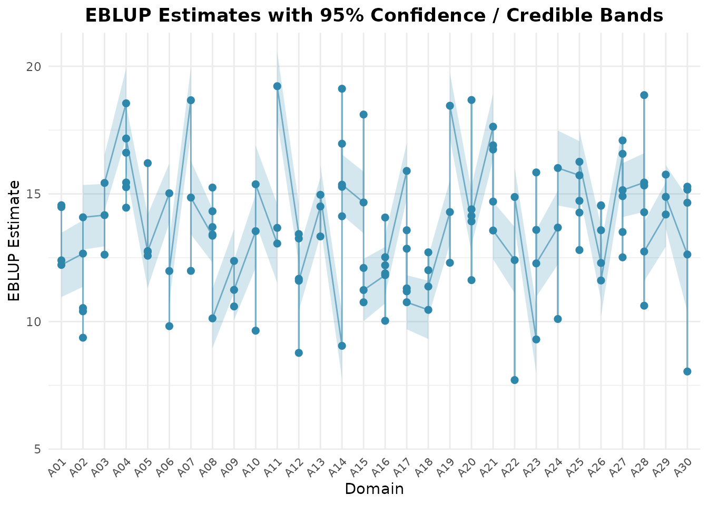

Sub-Area Level Estimation with Two-Fold Models
Source:vignettes/twofold-subarea.Rmd
twofold-subarea.RmdOverview
Surveys are often designed for large areas (provinces, regions) but the estimates are needed for the sub-areas inside them (districts, municipalities). The sub-areas of one area share the area’s characteristics, so their estimates should borrow strength not only from the regression on auxiliary variables, but also from the other sub-areas of the same area.
The two-fold sub-area level model of Torabi and Rao (2014) does this with two nested random effects. fastsae fits it in two ways:
| Function | Approach | Uncertainty | Area aggregates |
|---|---|---|---|
eblup_twofold() |
EBLUP, REML or ML | Analytical (Prasad-Rao type) or parametric bootstrap MSE |
df_area, weighted by
weight
|
hb_twofold() |
Hierarchical Bayes with INLA | Posterior SD and credible intervals |
df_area, weighted by
weight
|
hb_twofold() also fits binomial and Poisson responses
and a spatial (BYM2, Besag) area effect.
Model
For sub-area () of area (), the direct estimator with known sampling variance follows
with the area effect, the sub-area effect and the sampling error, all independent.
Compared with the Fay-Herriot model, which treats every sub-area as unrelated, the area effect is estimated from all the sampled sub-areas of area . This matters most for sub-areas that are not sampled: they get instead of the synthetic alone. Only a sub-area of an area without any sample is predicted synthetically.
The output follows the notation above: random_effect_var
holds sigma2_v (area) and sigma2_u (sub-area),
and df_eblup (or df_hb) holds
random_effect_area and
random_effect_subarea.
Example with simulated data
We simulate 30 areas with 3 to 6 sub-areas each, so that the true
sub-area means
are known. Fifteen sub-areas have no sample (their direct estimate is
NA), and all the sub-areas of area A30 are
unsampled.
library(fastsae)
set.seed(2024)
m <- 30
dat <- do.call(rbind, lapply(seq_len(m), function(i) {
ni <- sample(3:6, 1)
data.frame(
area = sprintf("A%02d", i),
subarea = sprintf("A%02d-%d", i, seq_len(ni)),
x1 = rnorm(ni, mean = 2),
pop = sample(200:2000, ni)
)
}))
v <- rnorm(m, sd = 1)
names(v) <- unique(dat$area)
dat$theta <- 10 + 2 * dat$x1 + v[dat$area] + rnorm(nrow(dat), sd = sqrt(0.5))
dat$vardir <- runif(nrow(dat), 0.5, 2)
dat$y <- dat$theta + rnorm(nrow(dat), sd = sqrt(dat$vardir))
# Unsampled sub-areas: 15 at random, plus every sub-area of A30
unsampled <- union(sample(which(dat$area != "A30"), 15), which(dat$area == "A30"))
dat$y[unsampled] <- NA
c(subareas = nrow(dat), sampled = sum(!is.na(dat$y)))
#> subareas sampled
#> 131 111
head(dat)
#> area subarea x1 pop theta vardir y
#> 1 A01 A01-1 1.5347257 1857 13.78128 1.663801 12.20118
#> 2 A01 A01-2 2.5191534 1961 15.03099 1.105026 14.48113
#> 3 A01 A01-3 2.5284898 1222 14.79953 1.301555 15.01471
#> 4 A01 A01-4 1.4848072 1252 11.84648 1.406429 11.36094
#> 5 A02 A02-1 1.8729653 1255 13.61192 1.986447 12.02304
#> 6 A02 A02-2 0.7751246 924 12.23727 1.268523 NAEach row is one sub-area. Unsampled sub-areas stay in the data with
y = NA and their covariates, so that they are
predicted.
Fitting the EBLUP
fit_tf <- eblup_twofold(
y ~ x1,
vardir = "vardir",
domain = "area",
subarea = "subarea",
data = dat,
weight = "pop",
print_result = FALSE
)
fit_tf$random_effect_var
#> sigma2_v sigma2_u
#> 1.1067031 0.1486881
fit_tf$estcoef
#> beta std.error stderr_beta zvalue pvalue
#> (Intercept) 9.605159 0.3223129 0.3223129 29.80073 3.822665e-195
#> x1 2.104314 0.1144109 0.1144109 18.39260 1.505751e-75
head(fit_tf$df_eblup)
#> domain subarea y eblup vardir random_effect_area
#> 1 A01 A01-1 12.20118 12.39678 1.663801 -0.4204473
#> 2 A01 A01-2 14.48113 14.48525 1.105026 -0.4204473
#> 3 A01 A01-3 15.01471 14.55766 1.301555 -0.4204473
#> 4 A01 A01-4 11.36094 12.21855 1.406429 -0.4204473
#> 5 A02 A02-1 12.02304 12.66335 1.986447 -0.8351927
#> 6 A02 A02-2 NA 10.40107 1.268523 -0.8351927
#> random_effect_subarea mse rse
#> 1 -0.0174796591 0.4205889 5.231427
#> 2 -0.0005543296 0.3941804 4.334326
#> 3 0.0522123369 0.4063272 4.378712
#> 4 -0.0906664052 0.4122688 5.254976
#> 5 -0.0479275040 0.4428309 5.254973
#> 6 0.0000000000 0.4782345 6.648787The default mse_type = "analytical" gives the Prasad-Rao
type MSE of the REML fit (for ML it adds the bias correction). Sub-area
A01-3 is not sampled: it still gets the area effect of
A01, while its sub-area effect is 0.
weight (here the population of each sub-area) aggregates
the sub-area EBLUPs to area means,
,
in df_area. Their MSE accounts for the errors the sub-areas
of an area share (the estimated area effect and
),
so it is larger than
would suggest.
head(fit_tf$df_area)
#> domain eblup_area mse_area rse_area n_subareas n_sampled
#> 1 A01 13.43189 0.2748473 3.903090 4 4
#> 2 A02 11.19056 0.3146821 5.012844 5 4
#> 3 A03 14.07817 0.2208185 3.337885 3 3
#> 4 A04 16.64890 0.3174408 3.384120 6 4
#> 5 A05 13.25981 0.4443843 5.027383 4 3
#> 6 A06 12.79993 0.2838182 4.162101 3 3How much does the area effect help?
Because the data are simulated, we can compare each estimator with
the true
.
The Fay-Herriot model, fitted with eblup_fh() on the same
rows, ignores the areas.
fit_fh <- eblup_fh(y ~ x1, vardir = "vardir", data = dat, print_result = FALSE)
sampled <- !is.na(dat$y)
in_sampled_area <- !sampled & dat$area != "A30"
emp_mse <- function(est, rows) mean((est[rows] - dat$theta[rows])^2)
data.frame(
rows = c("sampled sub-areas", "unsampled sub-areas of sampled areas"),
direct = c(emp_mse(dat$y, sampled), NA),
fay_herriot = c(
emp_mse(fit_fh$df_eblup$eblup, sampled),
emp_mse(fit_fh$df_eblup$eblup, in_sampled_area)
),
two_fold = c(
emp_mse(fit_tf$df_eblup$eblup, sampled),
emp_mse(fit_tf$df_eblup$eblup, in_sampled_area)
)
)
#> rows direct fay_herriot two_fold
#> 1 sampled sub-areas 1.211463 0.5087563 0.5291281
#> 2 unsampled sub-areas of sampled areas NA 1.5247133 0.7748664Both models improve on the direct estimates of the sampled sub-areas, and in this data set they are about equally accurate there: a sampled sub-area has its own direct estimate, so the area effect adds little. The difference is in the unsampled sub-areas of sampled areas. The Fay-Herriot model can only give them the synthetic estimate, while the two-fold model adds the estimated area effect and roughly halves the error. This is one simulated data set, not a simulation study: the gain depends on how large is relative to .
Bootstrap MSE
The parametric bootstrap refits the model on B data sets
generated from the fitted model and predicts with the same estimator as
the point estimate. seed makes it reproducible without
changing the random number stream of the session.
fit_boot <- eblup_twofold(
y ~ x1,
vardir = "vardir",
domain = "area",
subarea = "subarea",
data = dat,
mse_type = "bootstrap",
B = 100,
seed = 1,
print_result = FALSE
)
summary(fit_boot$df_eblup$mse / fit_tf$df_eblup$mse)
#> Min. 1st Qu. Median Mean 3rd Qu. Max.
#> 0.6322 0.8257 0.9056 0.9205 0.9971 1.4684The two MSE estimators agree on average; with B = 100
single bootstrap values are still noisy. Use
mse_type = "none" when only the point estimates are
needed.
Diagnostics and plots
The usual tools of the package work on the result:
autoplot(fit_tf, type = "comparison")
diagnose(fit_tf)
#> ── fastsae Small Area Estimation Diagnostic Report ─────────────────────────────
#> Model: "TWOFOLD" | Domains: 131 (Sampled: 111, Unsampled: 20)
#>
#> ── 1. Precision & Efficiency Gain ──
#>
#> ✔ Domains with RSE < 25%: 100% (High precision)
#> ✔ Average RSE reduction: Direct "8.54%" -> SAE "4.97%" (Gain: 3.57%)
#> ✔ Variance reduction in 100% of areas (MSE ratio median: 3.2, max: 5.34)
#>
#> ── 2. Brown et al. (2001) Diagnostics ──
#>
#> ✔ Goodness-of-Fit Statistic W: W = 60.62 (df = 111), p-value = 1 [Consistent with direct estimates]
#> ℹ Bias regression (direct ~ model, descriptive): alpha = -0.7789 (SE 0.5383), beta = 1.0544 (SE 0.0388), R^2 = 0.872
#> A slope above 1 is expected for shrinkage estimators; see ?diagnose.
#> ────────────────────────────────────────────────────────────────────────────────
#> ✔ Final Assessment: PASS: Model estimates are consistent with the direct estimates (Brown W test) and reliable.
#> ────────────────────────────────────────────────────────────────────────────────Hierarchical Bayes with hb_twofold()
hb_twofold() fits the same model with INLA. It needs the
INLA package, which is not on CRAN; see https://www.r-inla.org/download/. The chunks below are
only run when INLA is installed.
The argument weight (here the population of each
sub-area) aggregates the sub-area posteriors to area estimates,
,
with their posterior uncertainty in df_area.
fit_hb <- hb_twofold(
y ~ x1,
vardir = "vardir",
domain = "area",
subarea = "subarea",
weight = "pop",
data = dat,
print_result = FALSE
)
fit_hb$random_effect_var
#> sigma2_v sigma2_u
#> 1.2370025 0.1859788
head(fit_hb$df_hb)
#> domain subarea y hb linear_pred vardir sd mse
#> 1 A01 A01-1 12.20118 12.39290 12.39290 1.663801 0.6267376 0.3928000
#> 2 A01 A01-2 14.48113 14.48306 14.48306 1.105026 0.6022376 0.3626901
#> 3 A01 A01-3 15.01471 14.56061 14.56061 1.301555 0.6149109 0.3781155
#> 4 A01 A01-4 11.36094 12.20725 12.20725 1.406429 0.6221921 0.3871231
#> 5 A02 A02-1 12.02304 12.65286 12.65286 1.986447 0.6498927 0.4223605
#> 6 A02 A02-2 NA 10.39838 10.39838 1.268523 0.7105738 0.5049151
#> rse ci_lower ci_upper random_effect_area random_effect_subarea
#> 1 5.057232 11.151455 13.62611 -0.4211314 -2.072824e-02
#> 2 4.158220 13.296659 15.66950 -0.4211314 -1.332579e-03
#> 3 4.223113 13.363453 15.78882 -0.4211314 5.683072e-02
#> 4 5.096906 10.953783 13.40860 -0.4211314 -9.938372e-02
#> 5 5.136332 11.353954 13.91986 -0.8380897 -5.535978e-02
#> 6 6.833501 8.993467 11.81479 -0.8380897 6.810325e-11
head(fit_hb$df_area)
#> domain hb_area sd_area mse_area rse_area ci_lower_area ci_upper_area
#> 1 A01 13.42839 0.5115306 0.2616635 3.809322 12.41243 14.49213
#> 2 A02 11.18134 0.5585532 0.3119816 4.995403 10.02758 12.18690
#> 3 A03 14.08162 0.4564143 0.2083140 3.241206 13.24423 14.96521
#> 4 A04 16.66043 0.5313830 0.2823679 3.189491 15.54299 17.51367
#> 5 A05 13.24769 0.5650628 0.3192960 4.265369 12.29191 14.38185
#> 6 A06 12.79910 0.4876379 0.2377907 3.809941 11.74785 13.62786
#> n_subareas
#> 1 4
#> 2 5
#> 3 3
#> 4 6
#> 5 4
#> 6 3With the default vague priors the posterior means are very close to the EBLUP:
cor(fit_tf$df_eblup$eblup, fit_hb$df_hb$hb)
#> [1] 0.999991
compare_sae(fit_tf, fit_hb, names = c("EBLUP two-fold", "HB two-fold"))
#>
#> ── Small Area Estimation Model Concordance & Comparison ────────────────────────
#> Model 1: EBLUP two-fold
#> Model 2: HB two-fold
#> Matched Domains: 131
#> ────────────────────────────────────────────────────────────────────────────────
#>
#> Key Concordance & Efficiency Metrics:
#> Metric Value
#> Matched Domains 131
#> Pearson Correlation (r) 1.0000
#> Spearman Correlation (rho) 0.9999
#> Mean Absolute Difference (MAE) 0.0077
#> Root Mean Squared Difference (RMSD) 0.0104
#> Mean MSE Ratio (EBLUP two-fold / HB two-fold) 1.0438
#> Median MSE Ratio (EBLUP two-fold / HB two-fold) 1.0526
#> Domains where HB two-fold reports lower uncertainty 103 / 131
#> % of domains where HB two-fold reports lower uncertainty 78.6%
#> Mean RSE % (EBLUP two-fold) 4.97%
#> Mean RSE % (HB two-fold) 4.89%
#> Average RSE Reduction (%) 0.08%
#> ℹ One model is Hierarchical Bayes: its posterior variance and the frequentist MSE of the other are not the same quantity, so a smaller value does not show a more accurate estimator.compare_sae() reports smaller posterior variances than
EBLUP MSEs. The two are not the same quantity, and here the posterior
mean of
is also smaller than the REML estimate (both are below the true value
0.5, which is hard to separate from sampling variances of 0.5 to 2). A
smaller reported uncertainty is therefore not evidence of a more
accurate estimator. With simulated data, the error against the truth
settles it; here the two are practically equal:
c(
eblup_two_fold = emp_mse(fit_tf$df_eblup$eblup, sampled | in_sampled_area),
hb_two_fold = emp_mse(fit_hb$df_hb$hb, sampled | in_sampled_area)
)
#> eblup_two_fold hb_two_fold
#> 0.5583827 0.5570989For counts or proportions, use family = "poisson" with
exposure or family = "binomial" with
trials; with spatial = "bym2" and a
neighbourhood graph W between areas (for example from
create_weights()), the area effects are spatially
correlated.
MCMC with engine = jax_engine()
The same model can be sampled by MCMC (NumPyro’s No-U-Turn sampler on
JAX) instead of INLA. It needs Python with jax and
numpyro (see ?setup_numpyro_env), so this
chunk is not run here. The result has the same structure, plus the
posterior draws in draws and the largest split R-hat in
rhat_max; the area aggregates in df_area come
from the MCMC draws.
fit_jax <- hb_twofold(
y ~ x1,
vardir = "vardir",
domain = "area",
subarea = "subarea",
weight = "pop",
data = dat,
engine = jax_engine(warmup = 1000, samples = 1000, chains = 4),
print_result = FALSE
)
fit_jax$rhat_max
head(fit_jax$df_area)Both engines use the same priors by default
(jax_engine(priors = "inla")), so their estimates differ
only by INLA’s approximation and the Monte Carlo error.
Practical notes
- Give one row per sub-area. The
domaincolumn identifies the area and is required. -
vardirmust be finite and positive for every sampled sub-area; unsampled sub-areas can haveNA. Covariates must be complete for all rows, sampled or not. - At least two areas need sampled sub-areas, otherwise cannot be estimated.
-
eblup_twofold()hasself_benchmark = TRUEfor estimates that add up to a known total (see?eblup_twofold).
References
- Torabi, M., & Rao, J. N. K. (2014). On small area estimation under a sub-area level model. Journal of Multivariate Analysis, 127, 36–55.
- Rao, J. N. K., & Molina, I. (2015). Small Area Estimation (2nd ed.). John Wiley & Sons.
- Rue, H., Martino, S., & Chopin, N. (2009). Approximate Bayesian inference for latent Gaussian models by using integrated nested Laplace approximations. Journal of the Royal Statistical Society: Series B, 71(2), 319–392.